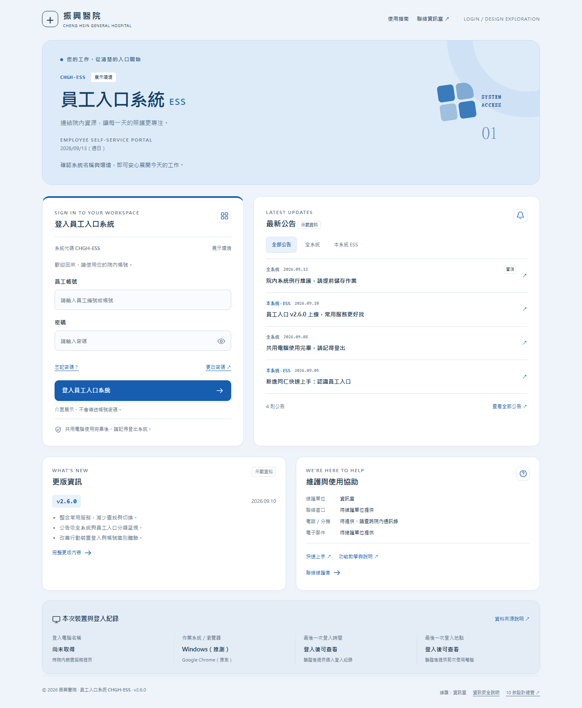
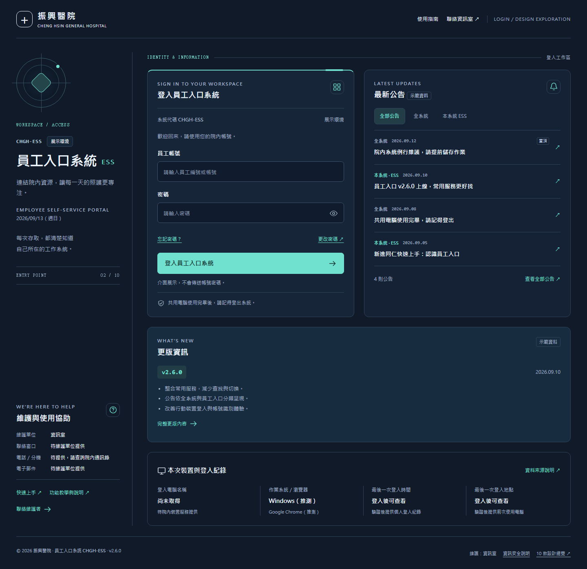
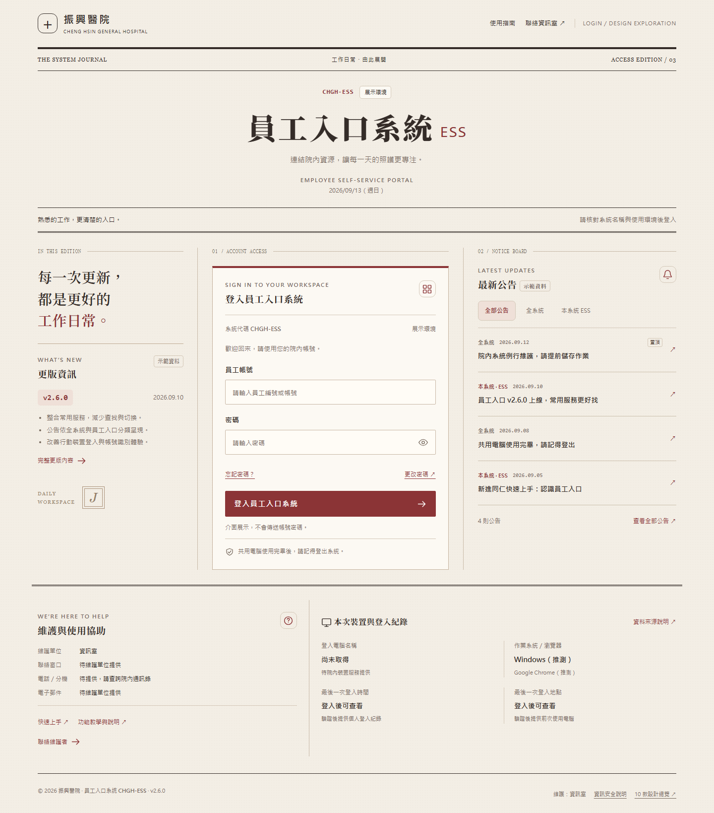
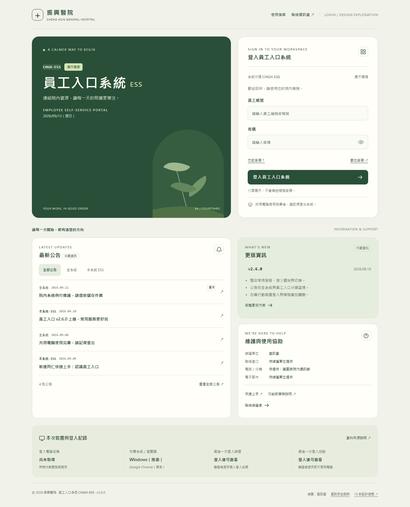
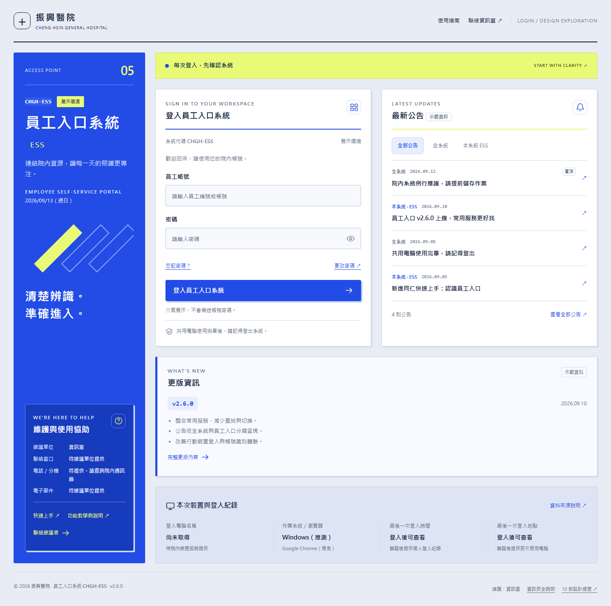
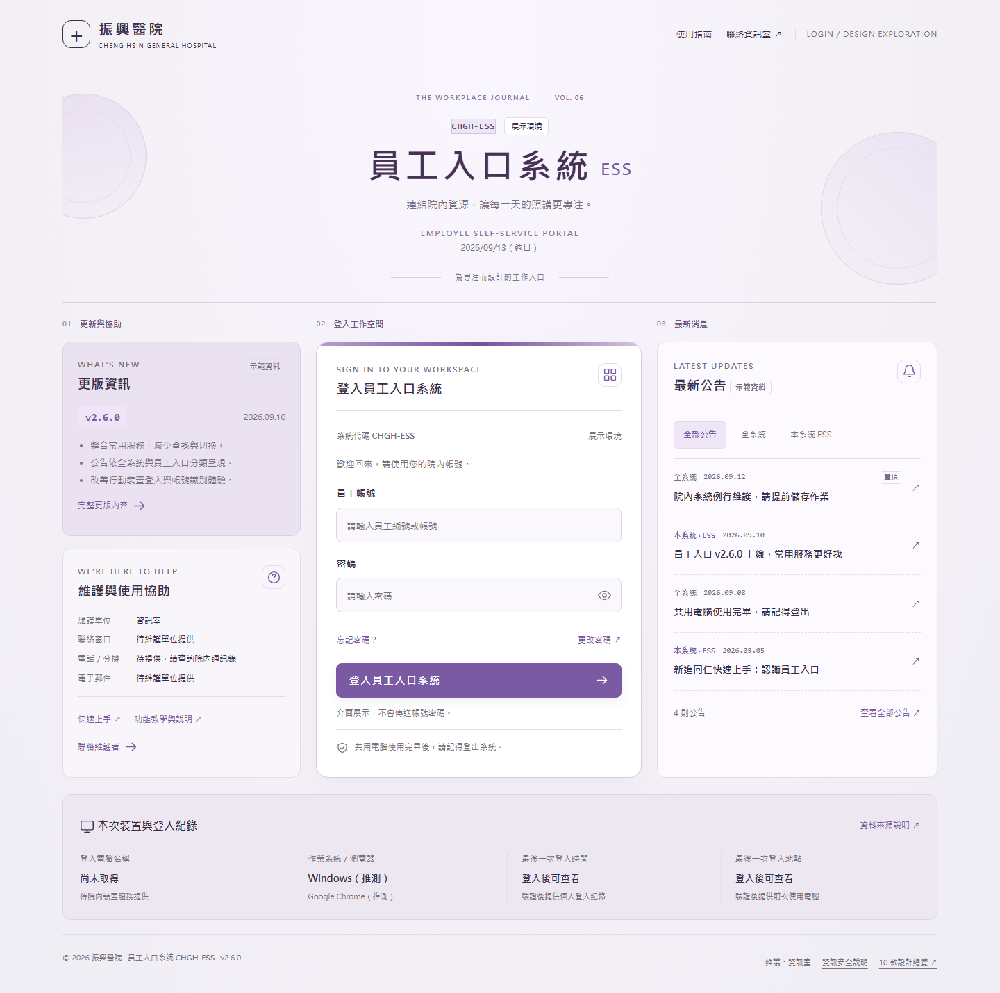
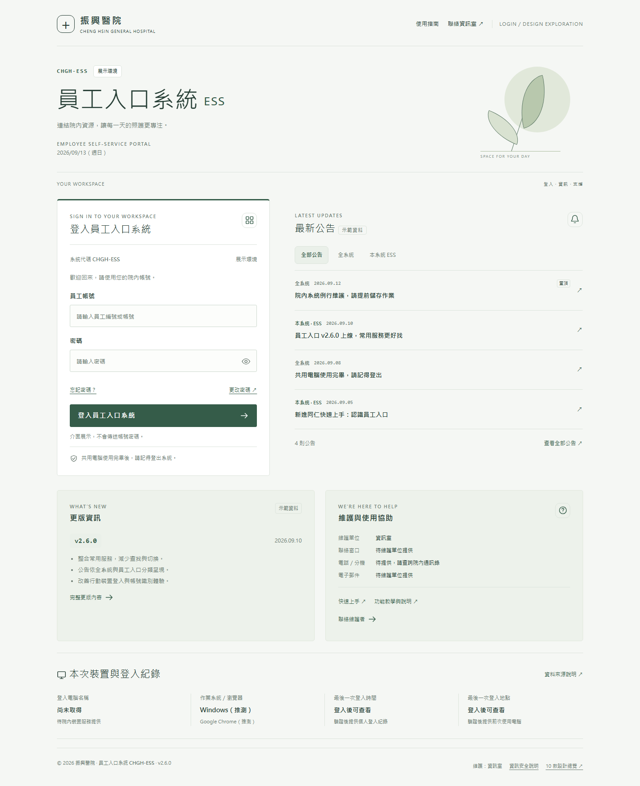
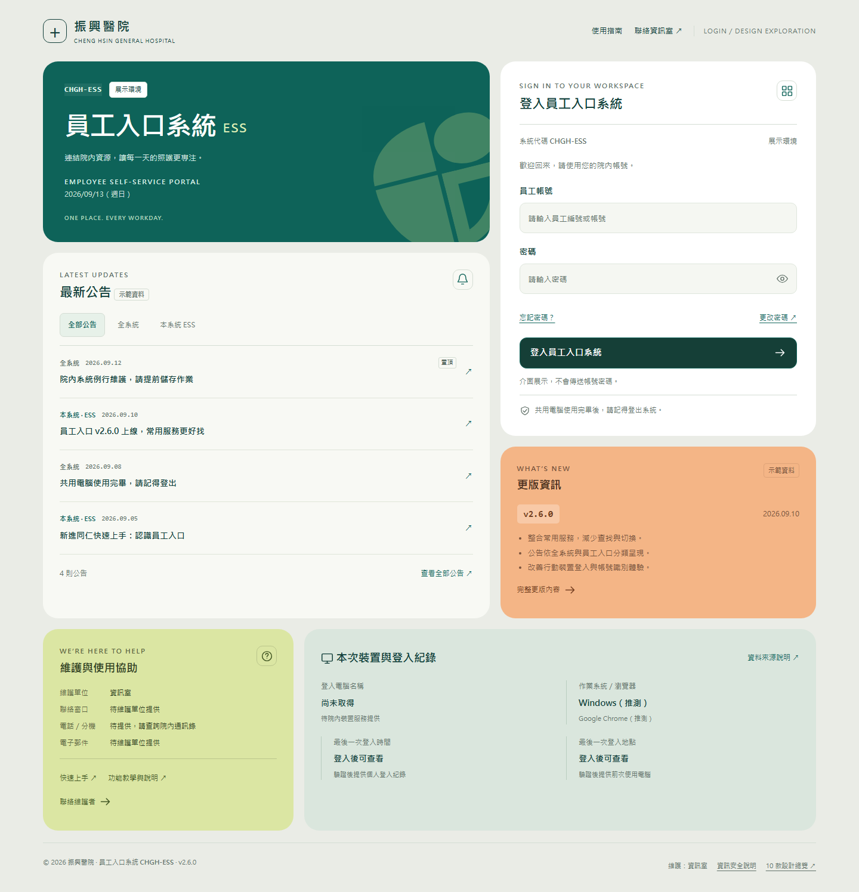
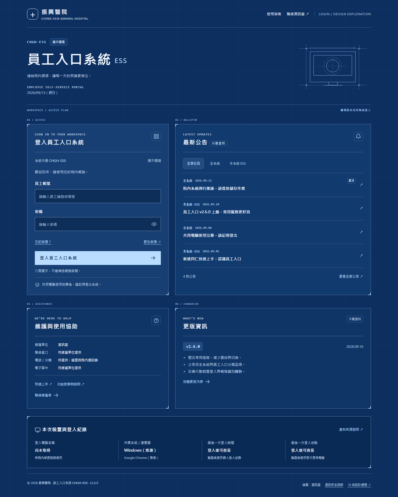
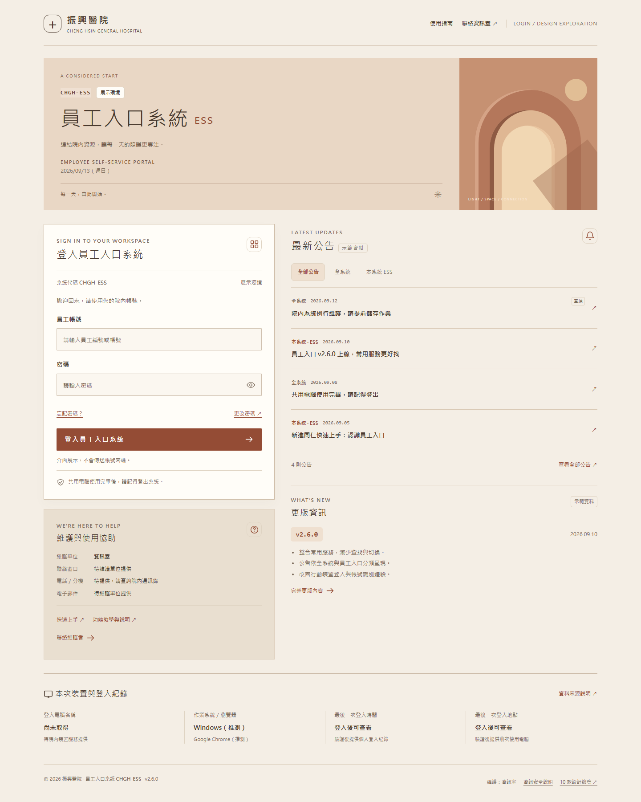

ONE WORKSPACE. TEN PERSPECTIVES.熟悉的日常，
熟悉的日常，
十種新的開始。
相同的完整功能，以十種設計語言重新詮釋。
從系統識別到登入紀錄，讓每一個入口清楚、有序。

01CLINICAL CLARITY
澄藍秩序
以澄藍識別橫幅、明確資訊分區與充裕留白，建立安心而有效率的系統入口。
開啟完整設計

02MIDNIGHT COMMAND
午夜指揮所
深海藍與訊號青綠，搭配固定識別側欄和儀表式資訊分區，帶出專注的控制台氛圍。
開啟完整設計

03THE SYSTEM JOURNAL
紙感院刊
以院刊編輯版型、米白紙色與酒紅色標記，讓系統名稱成為醒目刊頭，登入與消息井然排列。
開啟完整設計

04GARDEN COURTYARD
庭院綠境
深綠庭院與奶油白表單相映，讓系統入口清楚而從容。
開啟完整設計

05COBALT SIGNAL
鈷藍信號
鮮明鈷藍側欄搭配黃色情報帶，以強烈秩序辨識系統與登入任務。
開啟完整設計

06WISTERIA JOURNAL
紫藤雅緻
淡紫柔光、置中系統標題與雜誌三欄，平衡登入、公告與服務資訊。
開啟完整設計

07NORDIC SPACE
北歐留白
霧白、松綠與大幅留白，將系統識別與工作資訊安放在清楚的秩序中。
開啟完整設計

08URBAN TILES
都會磁磚
青綠主視覺、杏橘功能磁磚與俐落模組，將每日入口變成鮮明的工作桌面。
開啟完整設計

09PRECISION BLUEPRINT
精密藍圖
深藍製圖底紋、細線框與技術字距，建立具秩序感的資訊工作台。
開啟完整設計

10TERRACOTTA LIGHT
陶土日光
暖陶土、細緻拱廊與奶油紙色，讓登入頁呈現安定、從容的接待空間。
開啟完整設計
每一款，都包含完整需求。
帳號與系統識別
帳號、密碼、忘記與更改密碼連結
醒目的系統全名、代碼、環境與版本
公告與維護協助
全系統／本系統公告、更版內容
維護者與聯絡方式、功能教學與說明
裝置與登入紀錄
電腦名稱、作業系統、瀏覽器
最後登入時間、地點與前次使用電腦